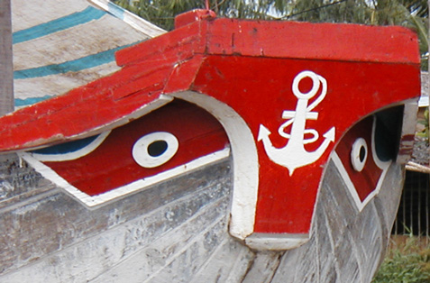
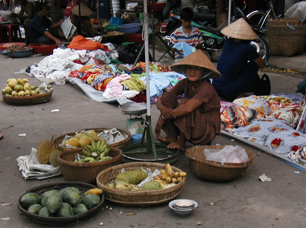
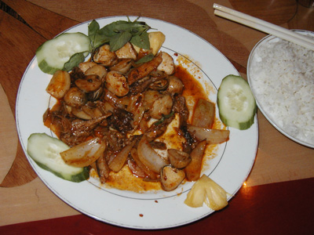
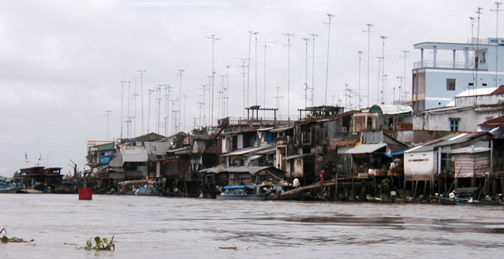
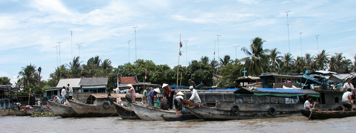
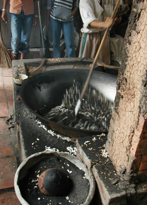

Viet Nam Trav-E-Logs©
| Me Kong Delta
Sent May 27, 2003 |
 |
| back: Ho Chi Minh | Delta Eyes |
================================= Started this trip on my second day in Viet Nam. Many, many of my backpacking friends had urged me to tour Viet Nam before the tourists ruin it. Hope life is great for each of you. =================================
May 14-15, 2003
 Booked a 2-day tour of the Me Kong Delta area with Sai Gon Tourist Travel, the folks that picked us up at the border where we crossed into Viet Nam from Cambodia. They were polite, easy to understand, and most surprisingly did NOT try to force us to stay at any particular hotel or guesthouse upon our arrival in “Sai Gon”. With the multitude of tour operators around, some not producing as offered in the brochures, the backpacker must ask a ton of questions. Few tours featured bicycles, and we also liked the logo “Less bus, More boat”, so Sai Gon Tourist won our business. We? Yes, with Chris; we did the walking tour yesterday.
Back to the tour. Walking down to the meeting location at the tour office was easy, as it was only a block away. Everything was wet from the downpour last evening. Departure time was 7:45 AM by bus after leaving my backpack in a lockup at Sai Gon Tourist Travel. Pretty well organized, these folks. Our bus contained both 2-day and 3-day Me Kong Delta tour guests.
Entertainment on the way south to the Delta was in the form of a narrative by the tour guides, taking turns introducing us to Vietnamese life today. Limited free enterprise was introduced to Viet Nam by the government just over ten years ago. Doesn’t look “limited” anymore! One of my fellow travelers is interested in economic geography, so hundreds of questions were asked about the cost of everything imaginable. Cost of a new motor cycle from China is $500, from Japan, $2000, with tax at $15. Cost of a one-room shack in the Delta, constructed of coconut, banana, and straw materials, $100. No surprise that land price would depend on size and location. Cost of a modest adobe, tile, and block house in the suburbs of Ho Chi Minh City, $10,000. The statement “No income tax, nor sales tax” did not produce agreement between the two tour guides.
We heard a story on the bus about a dragon & princess that founded Viet Nam. They fell in love, married, and had 100 children. But they had to split up, and the dragon returned to the river delta with 50 of the children, while the princess remained on land with the remaining children. Nowadays, all boats plying these waters have dragon eyes on the bow to ward off bad spirits. But fishing boats would never have eyes, as the fisherman would never catch any fish!
The bus finally pulls over in front of a small roadside shop near Cai Be, situated between the road and a river, maybe 100 yards (meters) wide. We pile out, and soon our tour boat shows up. The bus has been in contact with the boat by cell phone, as the rain-flooded streets have delayed our arrival. After motoring past the floating market, now at the tail end of activity, we conclude that a boat is as important to the farmer in the Me Kong Delta as a truck is to his inland counterpart. Each farmer erects a bamboo pole on his boat to display a sample of produce for sale. It also appears many of the wholesalers do the same, and smaller farmers make the rounds to find the best deal for their produce.
Other stops on the tour include making candy from popped rice, popped sticky rice, and popped corn, with peanuts added for flavor. Bike around a village in dilapidated, over the hill bicycles. Coconut candy making – milk is poured off – coconut is removed from shell, placed in heavy duty sack, which is then pressed to extract the coconut oil. Cook to concentrate. Flavor with the extract from the leaves of pineapple reed.
Pottery making – medium and large, round and square, by mixing sand with clay, often using molds for the large pots. After the desired shape and design is obtained, the pots are set aside to dry for several days. Then thousands are stacked in a large kiln and fired for a week, followed by another week to slowly cool down in the kiln. The factory we visited does not use glaze. But imagine the size of this factory – it had about 14 kilns, each about 16 yards wide and 6 yards tall. These $3 pots may sell for $65 each in the States.
Overnight in Can Tho at the best hotel I’ve stayed in on the trip. Chris and I share a room, as double occupancy is included in the price of  the trip.
Noticed snake (No, not snack) on the menu of a Vietnamese style restaurant, so I just had to give it a try. What does it taste like? Well, I don’t know. The cook used so much sauce, I have no idea of the true snake flavor. One anecdote: a young lady from Viet Nam at the same table with Chris and I, gave it a try and frantically removed it from her mouth when she realized what it was!
Transferred to a small boat to motor around Cai Rang, the largest floating market in the Me Kong Delta.
Rice factory – husk and kernel removed, then graded by color and size, and packaged in 50 Kg sacks.
Rice paper and noodle factory.
Walk in the delta – we just walked along a sidewalk and path through the housing area of a small village for an hour or so, with our guide pointing out plants, trees, and customs as we came upon them. Simple, but this was one of the highlights of the tour for me.
Bill
------------------------------
Email me at “juno.com” preceded by an “@” and “dancer2SEAsia”
"Travel is Fatal to Bigotry, Prejudice, and Narrow-minded ness" .... attributed to Mark Twain
| next: Cu Chi |
| back: Ho Chi Minh |